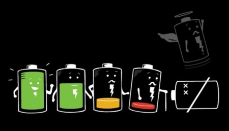

Como ahorrar bateria del celular
Autor: Javier Rafael Espinosa Mijangos
Mantener por varias horas la bateria del celular a veces puede ser complicado, ya sea por el uso intensivo que se les da o por la mera vida util que le queda, en este apartado puedes ver algunos tips que pueden lograr que tu bateria dure más tiempo, por ende, utilizando mas tiempo el celular.
1.- Ajustar el brillo de la pantalla
El brillo de pantalla tiene un gran impacto sobre el consumo de batería de tu celular. Redúcelo manualmente y mantenlo tan bajo como te sea cómodo.
2.- Apaga las conexiones de wifi y bluetooth
Tanto las conexiones Bluettoth como Wifi consumen mucha batería. Si no las estás utilizando activamente asegúrate de que las apagas. No hay motivo para ir por ahí con la conexión Wifi activada.
3.- No dejes apps que no necesites en 2do plano
Si está activada, la función "activación en segundo plano" permite que las aplicaciones actualicen sus contenidos en segundo plano cuando el celular está conectado a una red Wifi o a datos de celulares.
4.- Activar ahorro de energia (android)
Para ello ve a Ajustes > Administración de la batería. En algunos modelos de celular puedes escoger hasta 3 modos distintos de ahorro, que combinan de manera predeterminada varios de los trucos anteriores de este artículo.